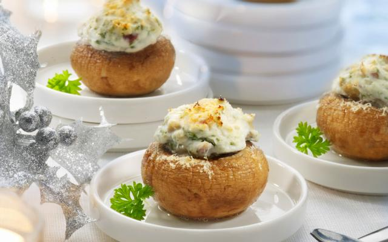

Odin Recipes
Back to recipe page

Fantastisch lekkere vegan gevulde champignons
Dit is een gerecht dat in de jaren 60 in sterrenrestaurants geserveerd werd; grote champignons gevuld en afgedekt met een plakje kaas.
Gebruik bij de borrel, of als voorafje bij een (kerst)diner!
Ingredients:
- 250 gram kastanjechampignons
- 1 ui
- 1 tot 2 eetlepels vegan kookroom
- 1 Knoflookteen
- Maizena
- Vegan kaasplakken, bijv. cheddar
Steps:
- Snijd de steel uit de champignons en kook de champignons 2 minuten in zout water.
- Hak de stelen van de champignons zo fijn mogelijk.
- Snipper de ui zo fijn mogelijk en fruit dit in de koekenpan met de knoflook en de champignonstukjes.
- Voeg de room toe, en breng op smaak met zout en peper
- bind het af met de maizena
- Vul de champignons met de vulling die je gemaakt hebt.